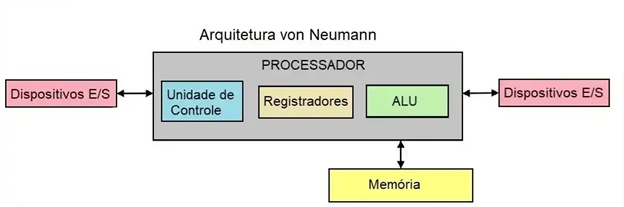
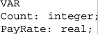
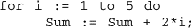
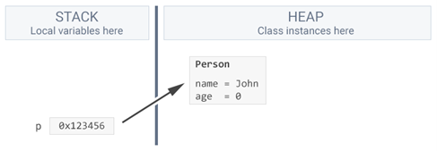
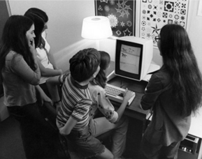
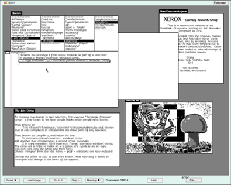
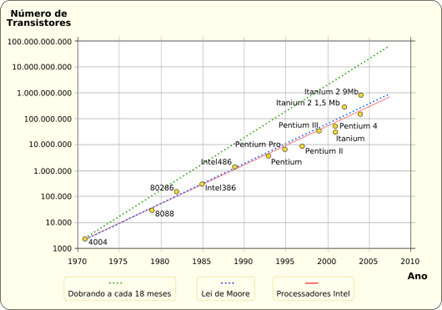

Programação Orientada a Objetos
História da programação orientada a objetos
1. Arquitetura de Von Neumann
A arquitetura de Von Neumann, descrita em 1945 por John von Neumann, é a base para a maioria dos computadores modernos. Ela consiste em uma unidade de processamento central (CPU) com uma unidade lógica aritmética (ALU) e registradores, uma unidade de controle, memória primária que armazena tanto dados quanto instruções, e mecanismos de entrada e saída. A característica principal é que dados e instruções compartilham o mesmo espaço de memória, sendo acessados pelo mesmo barramento, o que significa que o processador precisa alternar entre buscar instruções e operar em dados.
Linguagens imperativas, como C e Pascal, refletem diretamente os princípios da arquitetura Von Neumann. Nelas, temos variáveis que correspondem a células de memória e instruções sequenciais que controlam o fluxo do programa. Esse conceito de execução passo a passo é um alicerce importante para se compreender como a programação orientada a objetos (POO) evoluiu posteriormente para organizar código de maneira mais modular.
2. Programação Imperativa
A programação imperativa é um estilo de programação que segue uma sequência de instruções para alterar o estado do sistema. Ela está diretamente ligada à arquitetura de Von Neumann, onde a memória armazena dados e instruções que são manipulados pela CPU. Na programação imperativa, temos três características principais:
Variáveis: Células de memória nomeadas que armazenam dados. Por exemplo, int count; define uma variável para armazenar um valor inteiro.
-
Atribuição: Instruções que alteram o valor de uma variável, como count = 0;.
-
Iteração: Repetição de instruções até que uma condição seja satisfeita, como em loops for ou while.

Linguagens imperativas são essenciais para a transição para a programação orientada a objetos (POO), que introduz a ideia de encapsular variáveis e operações relacionadas em objetos. Na POO, ao invés de focarmos apenas em alterar variáveis e controlar o fluxo do programa, organizamos o código em componentes que refletem entidades do mundo real ou do domínio do problema.
3. História e contexto de criação
3.1 Criação do simula
- Ole-Johan Dahl e Kristen Nygaard começaram a desenvolver o SIMULA no início dos anos 60, a partir da necessidade de simular sistemas complexos como o tráfego de navios nos fiordes noruegueses, utilizando a base da linguagem ALGOL.
- Diferente do ALGOL, que seguia o modelo de programação imperativa alocando variáveis na stack durante a execução de funções, o SIMULA introduziu a ideia de alocar objetos na heap. Isso permitiu que os objetos persistissem além da execução de uma função específica, sendo acessíveis por mais tempo.
- SIMULA foi principalmente usado para simulações e introduziu o conceito de objetos. No entanto, a abstração oferecida pelos objetos e o gerenciamento de memória eram caros para os computadores da época, limitando seu desempenho em máquinas com recursos limitados.
- Embora o SIMULA tenha introduzido os conceitos fundamentais da Programação Orientada a Objetos, foi com Smalltalk, nos anos 70, que o paradigma se desenvolveu como um modelo completo e amplamente aplicável para o desenvolvimento de software.
3.2 Surgimento do Smalltalk
- O Smalltalk foi um sistema revolucionário desenvolvido no Xerox PARC na década de 1970, liderado por Alan Kay. O objetivo era criar um ambiente interativo e dinâmico que permitisse explorar novas formas de interação com o computador, utilizando a POO como base central.
- Smalltalk foi um dos primeiros sistemas a implementar uma interface gráfica de usuário (GUI), que influenciou fortemente o design de GUIs modernas, incluindo o que mais tarde seria adotado pela Apple e pela Microsoft.
- Em Smalltalk, cada elemento do programa, desde números simples até sistemas complexos, são objetos, e todos interagem por meio de troca de mensagens.
- O Smalltalk levou a Orientação a Objetos para um novo patamar. No entanto, sua complexidade e o custo computacional elevado para as máquinas da época dificultaram a adoção em larga escala, principalmente pelo costume dos desenvolvedores com a programação imperativa.
3.3 POO nos anos 80
- Ao longo dos anos 80, os processadores e memórias RAM ficaram mais rápidos e acessíveis, seguindo a tendência prevista pela Lei de Moore, que afirmava que o número de transistores em um chip dobraria aproximadamente a cada 18 meses. Essa melhoria contínua da eficiência do hardware possibilitou que linguagens orientadas a objetos como Objective-C e C++ fossem adotadas de maneira mais ampla.
- Com mais poder de processamento disponível, a POO tornou-se uma abordagem prática para lidar com a complexidade crescente dos softwares, oferecendo poder de abstração e polimorfismo sem comprometer o desempenho.
- Com a abstração, os programadores podiam focar no que os objetos deveriam fazer, em vez de como exatamente eles faziam, enquanto o polimorfismo permitia que o software fosse estendido e modificado sem grandes reescritas, tornando a manutenção mais eficiente.
- No entanto, isso veio com uma nova realidade: o tempo e o custo dos desenvolvedores passaram a ser mais caros do que o próprio hardware. Assim, surgiu a necessidade de ferramentas que otimizassem o tempo de desenvolvimento e manutenção, algo que a POO prometia resolver por meio de conceitos como reuso de código(herança e modularidade) e polimorfismo.
3.4 O que vem depois?
- Após os anos 80, a Programação Orientada a Objetos continuou evoluindo significativamente, com aprimoramentos nas linguagens e na infraestrutura de suporte. A popularização e o aprimoramento de funcionalidades como a coleta de lixo (Garbage Collection), além de frameworks mais robustos, facilitaram ainda mais o desenvolvimento.
- Nos anos 90, linguagens como Java e Ruby surgiram, trazendo maior robustez e automação do gerenciamento de memória, além de forte suporte para arquiteturas distribuídas e sistemas corporativos.
- Nos anos 2000, frameworks como Spring para Java e .NET para C# impulsionaram ainda mais a adoção da POO, possibilitando o desenvolvimento eficiente de aplicações empresariais e distribuídas. A partir daí, a POO se estabeleceu como um dos principais paradigmas de desenvolvimento, adaptando-se a novas demandas e se expandindo com a internet e os sistemas escaláveis.
Referências:
SCIENCEDIRECT. Von Neumann architecture. Disponível em: https://www.sciencedirect.com/topics/computer-science/von-neumann-architecture#:~:text=The%20Von%20Neumann%20architecture%20consists,fetching%20and%20execution%20cycles%20seriously
BLACK, Andrew P.;WETHERALL, David. Object-oriented programming: Some history, and challenges for the next fifty years. Elsevier, 2013. Disponível em: https://www.sciencedirect.com/science/article/pii/S0890540113000795#se0030.
BRIGHTMARBLES. A Brief History of Object-Oriented Programming. Disponível em: https://brightmarbles.io/blog/object-oriented-programming-history/.